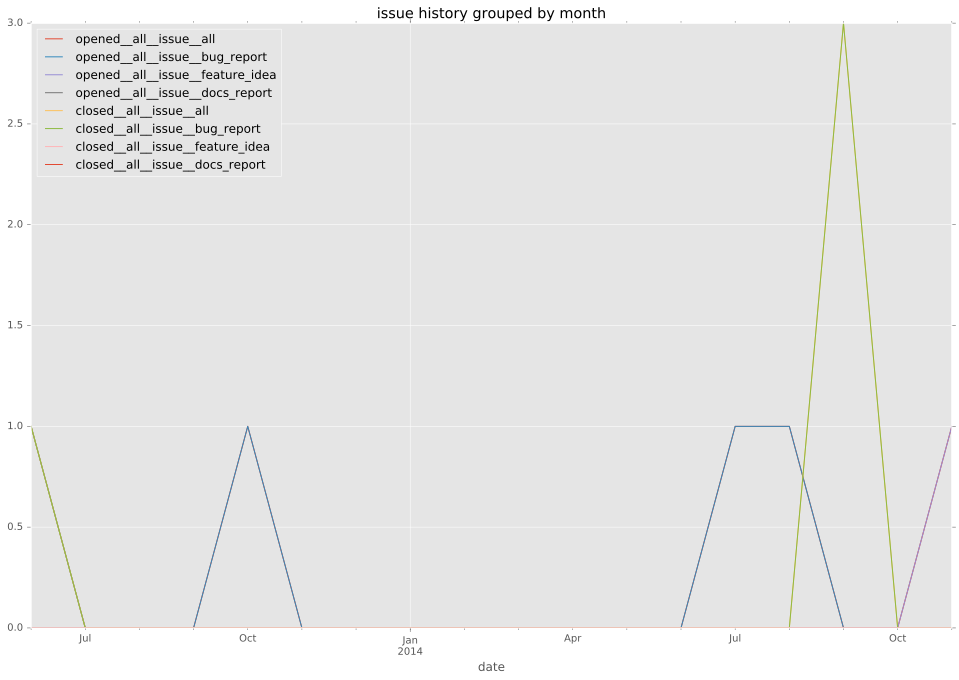
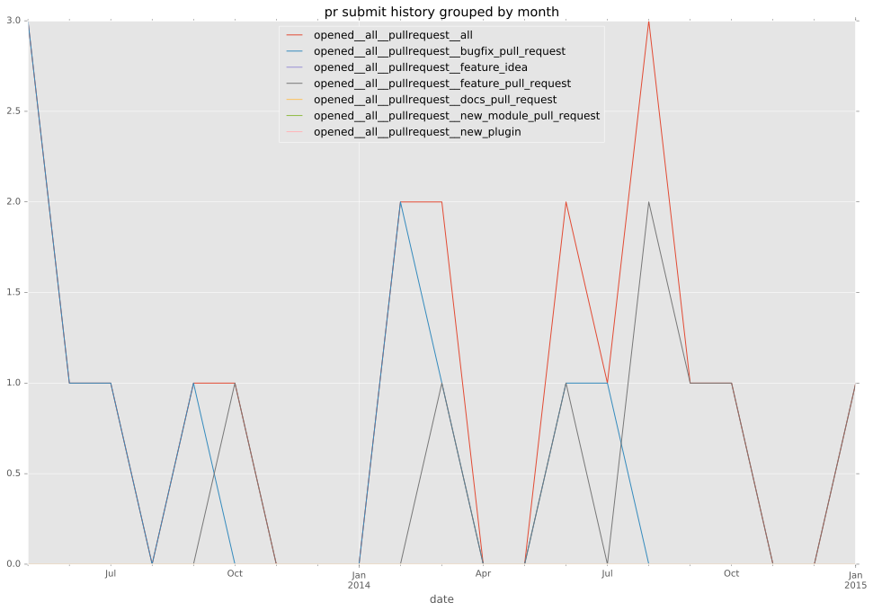
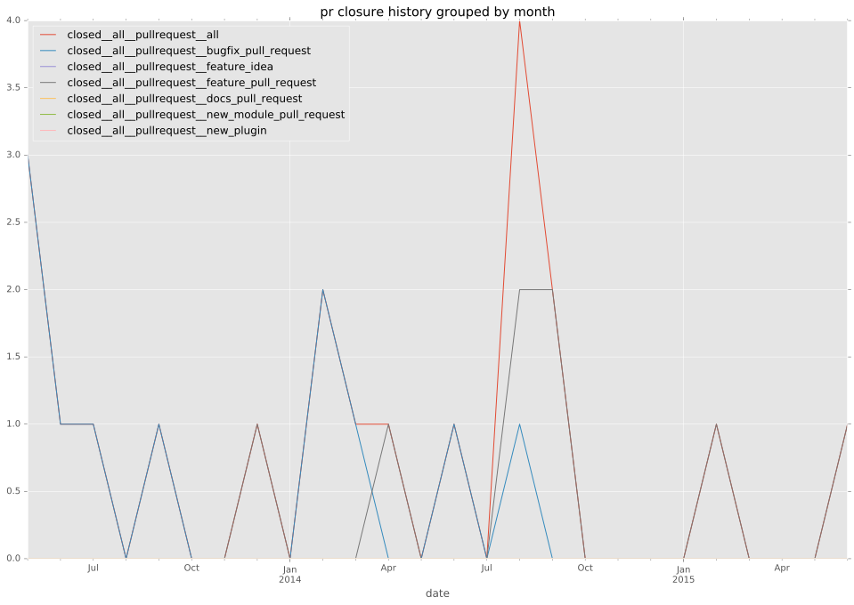

authors
maintainers
- DEPRECATED
contributors
- lorin : 30 commits
- MaheshIBM : 17 commits
- jctanner : 3 commits
- emonty : 3 commits
- mpdehaan : 2 commits
- jpmens : 2 commits
- cdwertmann : 2 commits
- sb98052 : 1 commits
- mikeputnam : 1 commits
- gundalow : 1 commits
- ericwb : 1 commits
- abadger : 1 commits
- Shrews : 1 commits
- Hypermanzer : 1 commits
total issue counts
bugfix pull request: 12
docs report: 1
documentation pull request: 1
pullrequest: 24
feature pull request: 11
feature idea: 1
issue: 7
bug report: 5
issue history

pullrequest history


days open by issue type
feature pull request
count: 14
std: 120.79953424
min: 3
max: 418
median: 16.5
mean: 63.2857142857
all
count: 40
std: 144.196793947
min: 0
max: 645
median: 4.0
mean: 66.05
documentation pull request
count: 2
std: 0.0
min: 1
max: 1
median: 1.0
mean: 1.0
pullrequest
count: 0
std: nan
min: nan
max: nan
median: nan
mean: nan
docs report
count: 1
std: nan
min: 47
max: 47
median: 47.0
mean: 47.0
bugfix pull request
count: 18
std: 62.902351962
min: 0
max: 269
median: 1.0
mean: 17.3333333333
feature idea
count: 1
std: nan
min: 347
max: 347
median: 347.0
mean: 347.0
issue
count: 0
std: nan
min: nan
max: nan
median: nan
mean: nan
bug report
count: 4
std: 299.876641304
min: 0
max: 645
median: 201.5
mean: 262.0
closures grouped by total days open